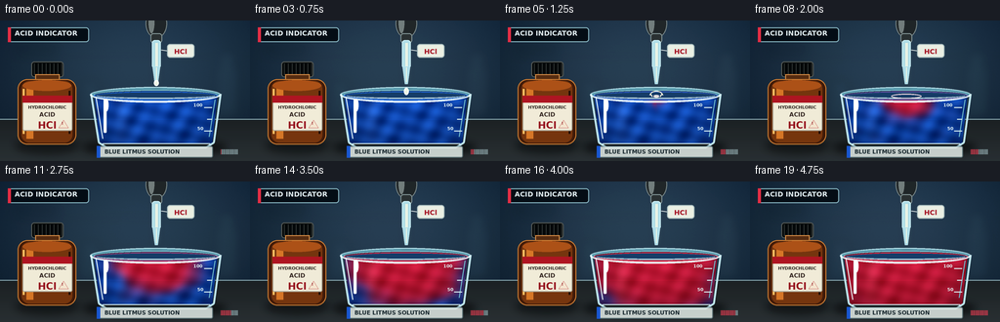
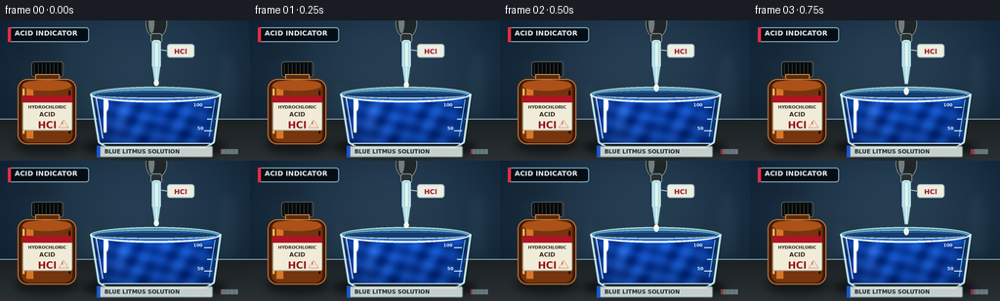

CODING AGENTS AS PIXEL WORLD MODELS
traex/GPT-5.6-Sol · material_0037
点击播放 · 原生 RGB 像素
逐轮保存的候选
回放视频、检查图与代码变化。
每份候选均可单独播放。实际图片检查记录在下方工具轨迹中。
候选 01播放与检查图
点击播放 · 原生 RGB 像素


展开代码变化
--- 上一保存版本
+++ 本次保存版本
@@ -0,0 +1,270 @@
+from pathlib import Path
+import math
+import numpy as np
+from PIL import Image, ImageDraw, ImageFont, ImageFilter
+import artifact_io
+
+# Deterministic, hand-rendered laboratory timelapse.
+W, H, N = 256, 144, 20
+S = 4
+WW, HH = W*S, H*S
+ROOT = Path(__file__).resolve().parent
+
+FONT_REG = "/usr/share/fonts/truetype/dejavu/DejaVuSans.ttf"
+FONT_BOLD = "/usr/share/fonts/truetype/dejavu/DejaVuSans-Bold.ttf"
+
+def font(size, bold=False):
+ try:
+ return ImageFont.truetype(FONT_BOLD if bold else FONT_REG, size*S)
+ except Exception:
+ return ImageFont.load_default()
+
+def box(coords):
+ return tuple(int(round(v*S)) for v in coords)
+
+def pts(seq):
+ return [(int(round(x*S)), int(round(y*S))) for x,y in seq]
+
+def text_center(draw, xy, text, fnt, fill):
+ cx, cy = xy
+ b = draw.textbbox((0,0), text, font=fnt)
+ draw.text((int(cx*S-(b[2]-b[0])/2), int(cy*S-(b[3]-b[1])/2)), text, font=fnt, fill=fill)
+
+# Stable photographic backdrop, generated at supersampled resolution.
+yy, xx = np.mgrid[0:HH, 0:WW].astype(np.float32)
+xn, yn = xx/WW, yy/HH
+# cool slate wall with a soft pool of studio light
+light = np.exp(-(((xn-.56)/.55)**2 + ((yn-.30)/.68)**2))
+vignette = np.clip(((xn-.5)**2 + (yn-.48)**2)*36, 0, 20)
+bg = np.zeros((HH,WW,3), dtype=np.float32)
+bg[:,:,0] = 18 + 24*light - vignette*.35
+bg[:,:,1] = 31 + 34*light - vignette*.25
+bg[:,:,2] = 43 + 42*light - vignette*.05
+# static fine-grain gives the smooth vectors a camera-like finish
+rng = np.random.default_rng(3701)
+bg += rng.normal(0, .85, (HH,WW,1))
+bg = np.clip(bg,0,255).astype(np.uint8)
+base = Image.fromarray(bg, 'RGB')
+
+# Defocused laboratory glassware/shelf silhouettes.
+far = Image.new('RGBA',(WW,HH),(0,0,0,0)); fd=ImageDraw.Draw(far)
+fd.rectangle(box((0,36,256,38)), fill=(100,145,161,20))
+fd.rectangle(box((15,25,58,37)), fill=(4,15,23,35))
+fd.rounded_rectangle(box((220,46,245,100)), radius=5*S, fill=(95,140,150,20), outline=(167,207,214,27), width=1*S)
+fd.rectangle(box((225,35,240,52)), fill=(105,157,165,19))
+fd.ellipse(box((224,31,241,39)), fill=(121,174,181,18))
+fd.polygon(pts([(78,102),(84,61),(100,61),(106,102)]), fill=(71,119,135,18), outline=(145,189,199,22))
+far = far.filter(ImageFilter.GaussianBlur(5*S))
+base = Image.alpha_composite(base.convert('RGBA'),far)
+# Back wall shelf line and worktop.
+bd=ImageDraw.Draw(base)
+bd.line(pts([(0,101),(256,101)]), fill=(132,160,166,65), width=1*S)
+bd.rectangle(box((0,102,256,144)), fill=(26,39,46,255))
+# worktop luminous gradient overlay
+bench = Image.new('RGBA',(WW,HH),(0,0,0,0)); bna=np.array(bench)
+by = np.arange(HH)[:,None]
+masky = by >= 102*S
+bench_rgb=np.zeros((HH,WW,4),dtype=np.uint8)
+val=np.clip(32 + (by-102*S)/(42*S)*15,32,47)
+for c,mul in enumerate([1.0,1.12,1.17]): bench_rgb[:,:,c]=np.where(masky,np.clip(val*mul,0,255),0)
+bench_rgb[:,:,3]=np.where(masky,220,0)
+base=Image.alpha_composite(base,Image.fromarray(bench_rgb,'RGBA'))
+
+# Header is part of the filmed lab setup: restrained and readable.
+bd=ImageDraw.Draw(base)
+bd.rounded_rectangle(box((8,7,91,22)),radius=3*S,fill=(8,17,25,148),outline=(133,177,188,40),width=S)
+bd.rectangle(box((8,7,11,22)),fill=(226,49,71,230))
+bd.text((15*S,9*S),"ACID INDICATOR",font=font(7,True),fill=(224,235,238,225))
+
+# Coordinates for liquid field/mask at high resolution.
+X = xx / S; Y = yy / S
+# Beaker tapers gently toward its base. Liquid includes body plus elliptical meniscus.
+left_edge = 96.5 + np.maximum(Y-77,0)*0.105
+right_edge = 222.5 - np.maximum(Y-77,0)*0.105
+liq_mask = (Y >= 77) & (Y <= 126) & (X >= left_edge) & (X <= right_edge)
+# curved bottom corners
+liq_mask &= (((X-101)/8)**2 + ((Y-121)/7)**2 >= 1) | (X>=101) | (Y<=121)
+liq_mask &= (((X-218)/8)**2 + ((Y-121)/7)**2 >= 1) | (X<=218) | (Y<=121)
+# broaden the upper surface elliptical zone subtly
+surface_ellipse = (((X-159.5)/63.0)**2 + ((Y-77)/4.1)**2 <= 1) & (Y>=74.5) & (Y<=80)
+liq_mask |= surface_ellipse
+
+# A static optical texture for liquid: ripples/caustics, not random frame flicker.
+caustic = (np.sin(X*.31 + Y*.13) + np.sin(X*.10 - Y*.39) + np.sin((X+Y)*.18))*1.35
+
+
+def draw_bottle(im):
+ # Hydrochloric acid reagent bottle, at left, to make the reagent unambiguous.
+ sh=Image.new('RGBA',(WW,HH),(0,0,0,0)); sd=ImageDraw.Draw(sh)
+ sd.ellipse(box((15,119,81,137)),fill=(0,0,0,105))
+ sh=sh.filter(ImageFilter.GaussianBlur(4*S)); im.alpha_composite(sh)
+ d=ImageDraw.Draw(im)
+ # black ribbed cap and glass neck
+ d.rounded_rectangle(box((32,42,65,58)),radius=3*S,fill=(9,12,13,255),outline=(86,91,87,180),width=S)
+ for x in range(35,64,4): d.line(pts([(x,44),(x,56)]),fill=(47,52,51,180),width=S)
+ d.rectangle(box((36,55,61,65)),fill=(87,47,21,255),outline=(208,137,70,120),width=S)
+ # amber body with layered highlights
+ d.rounded_rectangle(box((18,60,78,127)),radius=10*S,fill=(68,31,13,255),outline=(200,124,54,130),width=S)
+ d.rounded_rectangle(box((22,62,74,125)),radius=8*S,fill=(118,56,18,220))
+ d.rectangle(box((27,64,34,121)),fill=(211,119,42,45))
+ d.ellipse(box((23,61,73,72)),fill=(171,83,27,80))
+ d.line(pts([(24,70),(24,116)]),fill=(255,193,103,125),width=2*S)
+ d.line(pts([(71,72),(71,116)]),fill=(39,17,8,150),width=2*S)
+ # paper label and hazard accent
+ d.rounded_rectangle(box((23,77,74,113)),radius=2*S,fill=(237,232,213,250),outline=(170,166,151,255),width=S)
+ d.rectangle(box((23,77,74,84)),fill=(173,25,37,255))
+ text_center(d,(48.5,88),"HYDROCHLORIC",font(4.4,True),(52,44,39,255))
+ text_center(d,(48.5,95),"ACID",font(6,True),(58,45,40,255))
+ text_center(d,(48.5,105),"HCl",font(10,True),(150,22,34,255))
+ d.polygon(pts([(65,102),(70,110),(60,110)]),fill=(240,226,204,255),outline=(178,30,38,255))
+ d.text((63*S,103*S),"!",font=font(4,True),fill=(140,21,28,255))
+
+
+def draw_pipette(im):
+ # Glass Pasteur pipette hanging directly over the beaker.
+ glow=Image.new('RGBA',(WW,HH),(0,0,0,0)); gd=ImageDraw.Draw(glow)
+ gd.line(pts([(160,9),(160,65)]),fill=(180,229,239,45),width=7*S)
+ glow=glow.filter(ImageFilter.GaussianBlur(3*S)); im.alpha_composite(glow)
+ d=ImageDraw.Draw(im)
+ # rubber bulb, partially outside the frame
+ d.ellipse(box((149,-12,171,18)),fill=(35,41,43,255),outline=(114,127,128,230),width=S)
+ d.ellipse(box((152,-9,158,13)),fill=(114,125,124,80))
+ d.rounded_rectangle(box((154,13,166,23)),radius=3*S,fill=(45,52,53,255),outline=(126,143,144,180),width=S)
+ # transparent tube and acid column
+ d.rounded_rectangle(box((155.5,20,164.5,49)),radius=3*S,fill=(173,218,228,45),outline=(197,234,241,190),width=S)
+ d.rectangle(box((159,23,161.5,48)),fill=(229,239,225,115))
+ d.polygon(pts([(156,47),(164,47),(161.5,65),(158.5,65)]),fill=(172,218,229,48),outline=(201,236,241,190))
+ d.line(pts([(160,48),(160,63)]),fill=(235,242,225,120),width=S)
+ # floating tag tied to pipette
+ d.line(pts([(165,30),(172,31)]),fill=(214,224,224,130),width=S)
+ d.rounded_rectangle(box((171,24,199,38)),radius=3*S,fill=(231,235,224,235),outline=(171,190,190,180),width=S)
+ text_center(d,(185,30.5),"HCl",font(7,True),(165,24,39,255))
+
+
+def reaction_field(frame):
+ """Return acid-converted fraction: a turbulent, widening red plume."""
+ if frame < 5:
+ return np.zeros((HH,WW),dtype=np.float32)
+ q=(frame-4)/15.0
+ # irregular radial diffusion around the point of impact
+ swirl = 7.0*np.sin((Y-77)*.17 - frame*.52) + 2.5*np.sin(X*.22 + frame*.31)
+ dx = X-160 + swirl*np.clip((Y-75)/48,0,1)
+ dy = Y-77
+ radial=np.sqrt((dx*.88)**2+(dy*1.05)**2)
+ front=2 + 79*q
+ spread=1/(1+np.exp(np.clip((radial-front)/(2.1+4*q),-30,30)))
+ # narrow downward mixing tendril is visible before the broad diffusion front
+ center=160 + 10*np.sin((Y-77)*.11-frame*.35)*np.clip((Y-77)/45,0,1)
+ reach=5+58*q
+ plume=np.exp(-((X-center)/(3.0+8*q))**2) * (1/(1+np.exp(np.clip((Y-(77+reach))/2.5,-30,30))))
+ plume *= (Y>=75)
+ # top layer disperses sideways quickly; later convection clears isolated blue pockets
+ top=np.exp(-((Y-78)/(2.2+18*q))**2) * np.exp(-((X-160)/(7+70*q))**4)
+ global_mix=np.clip((q-.58)/.42,0,1)**1.5
+ field=np.maximum.reduce([spread,plume*.95,top*.9,np.full_like(spread,global_mix*.96)])
+ # moving curls at boundary create organic purple/blue marbling
+ turbulence=(np.sin(X*.21+Y*.13+frame*.29)+np.sin(X*.08-Y*.27-frame*.19))*.055*(1-field)*q
+ return np.clip(field+turbulence,0,1).astype(np.float32)
+
+
+def render(frame):
+ im=base.copy()
+ draw_bottle(im)
+ # Broad contact shadow under beaker.
+ shadow=Image.new('RGBA',(WW,HH),(0,0,0,0)); sd=ImageDraw.Draw(shadow)
+ sd.ellipse(box((84,121,232,139)),fill=(0,0,0,150))
+ sd.ellipse(box((102,125,219,134)),fill=(4,10,12,160))
+ shadow=shadow.filter(ImageFilter.GaussianBlur(4*S)); im.alpha_composite(shadow)
+
+ # Back half of glass rim (behind the liquid).
+ d=ImageDraw.Draw(im)
+ d.ellipse(box((92,68,226,84)),fill=(88,151,169,24),outline=(183,224,233,160),width=S)
+ d.ellipse(box((96,71,222,81)),fill=(10,24,34,90),outline=(128,190,207,110),width=S)
+
+ # Physically shaded, transforming solution.
+ conv=reaction_field(frame)
+ depth=np.clip((Y-75)/54,0,1)
+ # blue litmus -> vivid crimson red, with purple at the diffusion boundary
+ blue=np.zeros((HH,WW,3),dtype=np.float32)
+ blue[:,:,0]=16+4*caustic; blue[:,:,1]=75+8*caustic; blue[:,:,2]=190+13*caustic
+ red=np.zeros_like(blue)
+ red[:,:,0]=210+8*caustic; red[:,:,1]=25+3*caustic; red[:,:,2]=56+5*caustic
+ liquid=blue*(1-conv[:,:,None])+red*conv[:,:,None]
+ # volume shading: darker bottom and sides, bright top meniscus
+ side=np.clip(np.abs(X-159.5)/64,0,1)
+ shade=1-.23*depth-.16*side**3
+ highlight=17*np.exp(-((X-125)/7)**2)*(1-.6*depth)
+ liquid=liquid*shade[:,:,None]+highlight[:,:,None]
+ alpha=np.where(liq_mask,238,0).astype(np.uint8)
+ la=np.dstack((np.clip(liquid,0,255).astype(np.uint8),alpha))
+ im=Image.alpha_composite(im,Image.fromarray(la,'RGBA'))
+ d=ImageDraw.Draw(im)
+ # Meniscus and moving colored surface reflection.
+ surf_mix=float(np.clip((frame-4)/11,0,1))
+ surf_col=tuple(int((1-surf_mix)*a+surf_mix*b) for a,b in zip((41,111,224),(232,54,81)))+(210,)
+ d.ellipse(box((96,72.5,223,81.5)),fill=(26,63,105,38),outline=surf_col,width=1*S)
+ d.arc(box((99,74,220,80)),0,180,fill=(220,244,247,125),width=S)
+
+ # Beaker outlines, highlights and measurement marks over the liquid.
+ d.line(pts([(93,75),(101,125),(109,130),(211,130),(219,125),(226,75)]),fill=(188,226,234,170),width=2*S)
+ d.line(pts([(98,78),(105,121)]),fill=(235,250,251,125),width=S)
+ d.line(pts([(105,126),(215,126)]),fill=(215,239,242,105),width=S)
+ d.line(pts([(220,81),(214,119)]),fill=(111,184,202,90),width=S)
+ # Beaker lip front glints.
+ d.arc(box((92,68,226,84)),0,180,fill=(221,244,248,190),width=2*S)
+ d.arc(box((92,68,226,84)),4,176,fill=(242,254,255,100),width=S)
+ # Graduations and numerals on right.
+ for yv,long in [(89,8),(101,5),(113,8)]:
+ d.line(pts([(217-long,yv),(217,yv)]),fill=(218,238,240,140),width=S)
+ d.text((198*S,84*S),"100",font=font(4.5,True),fill=(224,240,241,125))
+ d.text((202*S,108*S),"50",font=font(4.5,True),fill=(224,240,241,125))
+ # Bright glass reflections.
+ d.rounded_rectangle(box((106,80,109,115)),radius=S,fill=(242,254,255,72))
+ d.ellipse(box((107,80,111,93)),fill=(255,255,255,60))
+
+ # Pipette must appear in front of beaker rim.
+ draw_pipette(im)
+ d=ImageDraw.Draw(im)
+ # Falling droplet sequence and impact. Droplet has a warm, nearly colorless acid glint.
+ if frame <= 4:
+ ydrop=[64,66,69,72.5,76][frame]
+ stretch=3.8 if frame in (2,3) else 3.0
+ d.ellipse(box((157.4,ydrop-stretch,162.6,ydrop+stretch)),fill=(235,243,223,205),outline=(255,255,249,235),width=S)
+ d.ellipse(box((158.5,ydrop-stretch+1,160,ydrop-1)),fill=(255,255,255,210))
+ elif frame == 5:
+ # tiny crown, then a spreading ringânot gas bubbles
+ d.arc(box((153,72,167,82)),185,355,fill=(248,244,225,235),width=S)
+ d.line(pts([(156,78),(154,75)]),fill=(243,239,220,215),width=S)
+ d.line(pts([(164,78),(166,75)]),fill=(243,239,220,215),width=S)
+ if 5 <= frame <= 10:
+ rr=3+(frame-5)*4.2
+ alpha=max(0,190-(frame-5)*28)
+ d.ellipse(box((160-rr,76.5-rr*.10,160+rr,78.5+rr*.10)),outline=(246,220,224,alpha),width=S)
+ if frame<=7:
+ d.ellipse(box((160-rr*.55,76.7-rr*.07,160+rr*.55,78.3+rr*.07)),outline=(250,245,232,alpha),width=S)
+
+ # Bench card naming the initial solution (does not cover the reaction).
+ card=Image.new('RGBA',(WW,HH),(0,0,0,0)); cd=ImageDraw.Draw(card)
+ cd.rounded_rectangle(box((99,128.5,218,140.5)),radius=2*S,fill=(219,228,224,225),outline=(111,139,144,180),width=S)
+ cd.rectangle(box((99,128.5,102.5,140.5)),fill=(29,89,206,255))
+ cd.text((107*S,131*S),"BLUE LITMUS SOLUTION",font=font(5.7,True),fill=(28,43,49,255))
+ im.alpha_composite(card)
+
+ # Small timelapse progress marks reinforce the temporal process.
+ d=ImageDraw.Draw(im)
+ for i in range(20):
+ col=(229,63,83,220) if i<=frame else (152,177,181,60)
+ x0=226+i*.9
+ d.line(pts([(x0,132),(x0,137)]),fill=col,width=max(S//2,1))
+
+ # Downsample for antialiasing and apply restrained final tonal polish.
+ out=im.convert('RGB').resize((W,H),Image.Resampling.LANCZOS)
+ arr=np.array(out).astype(np.float32)
+ arr=(arr-128)*1.035+128
+ # subtle changing exposure is characteristic of timelapse, but keep it almost imperceptible
+ arr += math.sin(frame*.47)*0.45
+ return np.clip(arr,0,255).astype(np.uint8)
+
+frames=np.stack([render(i) for i in range(N)],axis=0)
+artifact_io.save(frames,ROOT)
+print(f"saved {frames.shape} RGB frames to {ROOT}")
可观测工具轨迹
实际执行的命令与返回图片。
命令 1exit 0
/bin/bash -lc "cat prompt.txt && printf '\\n---RULES---\\n' && cat GENERATION_RULES.md && printf '\\n---SPEC---\\n' && cat task_spec.json"
命令 2exit 0
/bin/bash -lc "find . -maxdepth 2 -type f -printf '%p\\n' | sort && printf '\\n--- binaries ---\\n' && command -v ffmpeg || true && command -v python3 || true"
命令 3exit 0
/bin/bash -lc 'cat artifact_io.py'
命令 4exit 0
/bin/bash -lc "cat > generate.py <<'PY'
from pathlib import Path
import math
import numpy as np
from PIL import Image, ImageDraw, ImageFont, ImageFilter
import artifact_io
# Deterministic, hand-rendered laboratory timelapse.
W, H, N = 256, 144, 20
S = 4
WW, HH = W*S, H*S
ROOT = Path(__file__).resolve().parent
FONT_REG = \"/usr/share/fonts/truetype/dejavu/DejaVuSans.ttf\"
FONT_BOLD = \"/usr/share/fonts/truetype/dejavu/DejaVuSans-Bold.ttf\"
def font(size, bold=False):
try:
return ImageFont.truetype(FONT_BOLD if bold else FONT_REG, size*S)
except Exception:
return ImageFont.load_default()
def box(coords):
return tuple(int(round(v*S)) for v in coords)
def pts(seq):
return [(int(round(x*S)), int(round(y*S))) for x,y in seq]
def text_center(draw, xy, text, fnt, fill):
cx, cy = xy
b = draw.textbbox((0,0), text, font=fnt)
draw.text((int(cx*S-(b[2]-b[0])/2), int(cy*S-(b[3]-b[1])/2)), text, font=fnt, fill=fill)
# Stable photographic backdrop, generated at supersampled resolution.
yy, xx = np.mgrid[0:HH, 0:WW].astype(np.float32)
xn, yn = xx/WW, yy/HH
# cool slate wall with a soft pool of studio light
light = np.exp(-(((xn-.56)/.55)**2 + ((yn-.30)/.68)**2))
vignette = np.clip(((xn-.5)**2 + (yn-.48)**2)*36, 0, 20)
bg = np.zeros((HH,WW,3), dtype=np.float32)
bg[:,:,0] = 18 + 24*light - vignette*.35
bg[:,:,1] = 31 + 34*light - vignette*.25
bg[:,:,2] = 43 + 42*light - vignette*.05
# static fine-grain gives the smooth vectors a camera-like finish
rng = np.random.default_rng(3701)
bg += rng.normal(0, .85, (HH,WW,1))
bg = np.clip(bg,0,255).astype(np.uint8)
base = Image.fromarray(bg, 'RGB')
# Defocused laboratory glassware/shelf silhouettes.
far = Image.new('RGBA',(WW,HH),(0,0,0,0)); fd=ImageDraw.Draw(far)
fd.rectangle(box((0,36,256,38)), fill=(100,145,161,20))
fd.rectangle(box((15,25,58,37)), fill=(4,15,23,35))
fd.rounded_rectangle(box((220,46,245,100)), radius=5*S, fill=(95,140,150,20), outline=(167,207,214,27), width=1*S)
fd.rectangle(box((225,35,240,52)), fill=(105,157,165,19))
fd.ellipse(box((224,31,241,39)), fill=(121,174,181,18))
fd.polygon(pts([(78,102),(84,61),(100,61),(106,102)]), fill=(71,119,135,18), outline=(145,189,199,22))
far = far.filter(ImageFilter.GaussianBlur(5*S))
base = Image.alpha_composite(base.convert('RGBA'),far)
# Back wall shelf line and worktop.
bd=ImageDraw.Draw(base)
bd.line(pts([(0,101),(256,101)]), fill=(132,160,166,65), width=1*S)
bd.rectangle(box((0,102,256,144)), fill=(26,39,46,255))
# worktop luminous gradient overlay
bench = Image.new('RGBA',(WW,HH),(0,0,0,0)); bna=np.array(bench)
by = np.arange(HH)[:,None]
masky = by >= 102*S
bench_rgb=np.zeros((HH,WW,4),dtype=np.uint8)
val=np.clip(32 + (by-102*S)/(42*S)*15,32,47)
for c,mul in enumerate([1.0,1.12,1.17]): bench_rgb[:,:,c]=np.where(masky,np.clip(val*mul,0,255),0)
bench_rgb[:,:,3]=np.where(masky,220,0)
base=Image.alpha_composite(base,Image.fromarray(bench_rgb,'RGBA'))
# Header is part of the filmed lab setup: restrained and readable.
bd=ImageDraw.Draw(base)
bd.rounded_rectangle(box((8,7,91,22)),radius=3*S,fill=(8,17,25,148),outline=(133,177,188,40),width=S)
bd.rectangle(box((8,7,11,22)),fill=(226,49,71,230))
bd.text((15*S,9*S),\"ACID INDICATOR\",font=font(7,True),fill=(224,235,238,225))
# Coordinates for liquid field/mask at high resolution.
X = xx / S; Y = yy / S
# Beaker tapers gently toward its base. Liquid includes body plus elliptical meniscus.
left_edge = 96.5 + np.maximum(Y-77,0)*0.105
right_edge = 222.5 - np.maximum(Y-77,0)*0.105
liq_mask = (Y >= 77) & (Y <= 126) & (X >= left_edge) & (X <= right_edge)
# curved bottom corners
liq_mask &= (((X-101)/8)**2 + ((Y-121)/7)**2 >= 1) | (X>=101) | (Y<=121)
liq_mask &= (((X-218)/8)**2 + ((Y-121)/7)**2 >= 1) | (X<=218) | (Y<=121)
# broaden the upper surface elliptical zone subtly
surface_ellipse = (((X-159.5)/63.0)**2 + ((Y-77)/4.1)**2 <= 1) & (Y>=74.5) & (Y<=80)
liq_mask |= surface_ellipse
# A static optical texture for liquid: ripples/caustics, not random frame flicker.
caustic = (np.sin(X*.31 + Y*.13) + np.sin(X*.10 - Y*.39) + np.sin((X+Y)*.18))*1.35
def draw_bottle(im):
# Hydrochloric acid reagent bottle, at left, to make the reagent unambiguous.
sh=Image.new('RGBA',(WW,HH),(0,0,0,0)); sd=ImageDraw.Draw(sh)
sd.ellipse(box((15,119,81,137)),fill=(0,0,0,105))
sh=sh.filter(ImageFilter.GaussianBlur(4*S)); im.alpha_composite(sh)
d=ImageDraw.Draw(im)
# black ribbed cap and glass neck
d.rounded_rectangle(box((32,42,65,58)),radius=3*S,fill=(9,12,13,255),outline=(86,91,87,180),width=S)
for x in range(35,64,4): d.line(pts([(x,44),(x,56)]),fill=(47,52,51,180),width=S)
d.rectangle(box((36,55,61,65)),fill=(87,47,21,255),outline=(208,137,70,120),width=S)
# amber body with layered highlights
d.rounded_rectangle(box((18,60,78,127)),radius=10*S,fill=(68,31,13,255),outline=(200,124,54,130),width=S)
d.rounded_rectangle(box((22,62,74,125)),radius=8*S,fill=(118,56,18,220))
d.rectangle(box((27,64,34,121)),fill=(211,119,42,45))
d.ellipse(box((23,61,73,72)),fill=(171,83,27,80))
d.line(pts([(24,70),(24,116)]),fill=(255,193,103,125),width=2*S)
d.line(pts([(71,72),(71,116)]),fill=(39,17,8,150),width=2*S)
# paper label and hazard accent
d.rounded_rectangle(box((23,77,74,113)),radius=2*S,fill=(237,232,213,250),outline=(170,166,151,255),width=S)
d.rectangle(box((23,77,74,84)),fill=(173,25,37,255))
text_center(d,(48.5,88),\"HYDROCHLORIC\",font(4.4,True),(52,44,39,255))
text_center(d,(48.5,95),\"ACID\",font(6,True),(58,45,40,255))
text_center(d,(48.5,105),\"HCl\",font(10,True),(150,22,34,255))
d.polygon(pts([(65,102),(70,110),(60,110)]),fill=(240,226,204,255),outline=(178,30,38,255))
d.text((63*S,103*S),\""'!",font=font(4,True),fill=(140,21,28,255))
def draw_pipette(im):
# Glass Pasteur pipette hanging directly over the beaker.
glow=Image.new('"'RGBA',(WW,HH),(0,0,0,0)); gd=ImageDraw.Draw(glow)
gd.line(pts([(160,9),(160,65)]),fill=(180,229,239,45),width=7*S)
glow=glow.filter(ImageFilter.GaussianBlur(3*S)); im.alpha_composite(glow)
d=ImageDraw.Draw(im)
# rubber bulb, partially outside the frame
d.ellipse(box((149,-12,171,18)),fill=(35,41,43,255),outline=(114,127,128,230),width=S)
d.ellipse(box((152,-9,158,13)),fill=(114,125,124,80))
d.rounded_rectangle(box((154,13,166,23)),radius=3*S,fill=(45,52,53,255),outline=(126,143,144,180),width=S)
# transparent tube and acid column
d.rounded_rectangle(box((155.5,20,164.5,49)),radius=3*S,fill=(173,218,228,45),outline=(197,234,241,190),width=S)
d.rectangle(box((159,23,161.5,48)),fill=(229,239,225,115))
d.polygon(pts([(156,47),(164,47),(161.5,65),(158.5,65)]),fill=(172,218,229,48),outline=(201,236,241,190))
d.line(pts([(160,48),(160,63)]),fill=(235,242,225,120),width=S)
# floating tag tied to pipette
d.line(pts([(165,30),(172,31)]),fill=(214,224,224,130),width=S)
d.rounded_rectangle(box((171,24,199,38)),radius=3*S,fill=(231,235,224,235),outline=(171,190,190,180),width=S)
text_center(d,(185,30.5),\"HCl\",font(7,True),(165,24,39,255))
def reaction_field(frame):
\"\"\"Return acid-converted fraction: a turbulent, widening red plume.\"\"\"
if frame < 5:
return np.zeros((HH,WW),dtype=np.float32)
q=(frame-4)/15.0
# irregular radial diffusion around the point of impact
swirl = 7.0*np.sin((Y-77)*.17 - frame*.52) + 2.5*np.sin(X*.22 + frame*.31)
dx = X-160 + swirl*np.clip((Y-75)/48,0,1)
dy = Y-77
radial=np.sqrt((dx*.88)**2+(dy*1.05)**2)
front=2 + 79*q
spread=1/(1+np.exp(np.clip((radial-front)/(2.1+4*q),-30,30)))
# narrow downward mixing tendril is visible before the broad diffusion front
center=160 + 10*np.sin((Y-77)*.11-frame*.35)*np.clip((Y-77)/45,0,1)
reach=5+58*q
plume=np.exp(-((X-center)/(3.0+8*q))**2) * (1/(1+np.exp(np.clip((Y-(77+reach))/2.5,-30,30))))
plume *= (Y>=75)
# top layer disperses sideways quickly; later convection clears isolated blue pockets
top=np.exp(-((Y-78)/(2.2+18*q))**2) * np.exp(-((X-160)/(7+70*q))**4)
global_mix=np.clip((q-.58)/.42,0,1)**1.5
field=np.maximum.reduce([spread,plume*.95,top*.9,np.full_like(spread,global_mix*.96)])
# moving curls at boundary create organic purple/blue marbling
turbulence=(np.sin(X*.21+Y*.13+frame*.29)+np.sin(X*.08-Y*.27-frame*.19))*.055*(1-field)*q
return np.clip(field+turbulence,0,1).astype(np.float32)
def render(frame):
im=base.copy()
draw_bottle(im)
# Broad contact shadow under beaker.
shadow=Image.new('RGBA',(WW,HH),(0,0,0,0)); sd=ImageDraw.Draw(shadow)
sd.ellipse(box((84,121,232,139)),fill=(0,0,0,150))
sd.ellipse(box((102,125,219,134)),fill=(4,10,12,160))
shadow=shadow.filter(ImageFilter.GaussianBlur(4*S)); im.alpha_composite(shadow)
# Back half of glass rim (behind the liquid).
d=ImageDraw.Draw(im)
d.ellipse(box((92,68,226,84)),fill=(88,151,169,24),outline=(183,224,233,160),width=S)
d.ellipse(box((96,71,222,81)),fill=(10,24,34,90),outline=(128,190,207,110),width=S)
# Physically shaded, transforming solution.
conv=reaction_field(frame)
depth=np.clip((Y-75)/54,0,1)
# blue litmus -> vivid crimson red, with purple at the diffusion boundary
blue=np.zeros((HH,WW,3),dtype=np.float32)
blue[:,:,0]=16+4*caustic; blue[:,:,1]=75+8*caustic; blue[:,:,2]=190+13*caustic
red=np.zeros_like(blue)
red[:,:,0]=210+8*caustic; red[:,:,1]=25+3*caustic; red[:,:,2]=56+5*caustic
liquid=blue*(1-conv[:,:,None])+red*conv[:,:,None]
# volume shading: darker bottom and sides, bright top meniscus
side=np.clip(np.abs(X-159.5)/64,0,1)
shade=1-.23*depth-.16*side**3
highlight=17*np.exp(-((X-125)/7)**2)*(1-.6*depth)
liquid=liquid*shade[:,:,None]+highlight[:,:,None]
alpha=np.where(liq_mask,238,0).astype(np.uint8)
la=np.dstack((np.clip(liquid,0,255).astype(np.uint8),alpha))
im=Image.alpha_composite(im,Image.fromarray(la,'RGBA'))
d=ImageDraw.Draw(im)
# Meniscus and moving colored surface reflection.
surf_mix=float(np.clip((frame-4)/11,0,1))
surf_col=tuple(int((1-surf_mix)*a+surf_mix*b) for a,b in zip((41,111,224),(232,54,81)))+(210,)
d.ellipse(box((96,72.5,223,81.5)),fill=(26,63,105,38),outline=surf_col,width=1*S)
d.arc(box((99,74,220,80)),0,180,fill=(220,244,247,125),width=S)
# Beaker outlines, highlights and measurement marks over the liquid.
d.line(pts([(93,75),(101,125),(109,130),(211,130),(219,125),(226,75)]),fill=(188,226,234,170),width=2*S)
d.line(pts([(98,78),(105,121)]),fill=(235,250,251,125),width=S)
d.line(pts([(105,126),(215,126)]),fill=(215,239,242,105),width=S)
d.line(pts([(220,81),(214,119)]),fill=(111,184,202,90),width=S)
# Beaker lip front glints.
d.arc(box((92,68,226,84)),0,180,fill=(221,244,248,190),width=2*S)
d.arc(box((92,68,226,84)),4,176,fill=(242,254,255,100),width=S)
# Graduations and numerals on right.
for yv,long in [(89,8),(101,5),(113,8)]:
d.line(pts([(217-long,yv),(217,yv)]),fill=(218,238,240,140),width=S)
d.text((198*S,84*S),\"100\",font=font(4.5,True),fill=(224,240,241,125))
d.text((202*S,108*S),\"50\",font=font(4.5,True),fill=(224,240,241,125))
# Bright glass reflections.
d.rounded_rectangle(box((106,80,109,115)),radius=S,fill=(242,254,255,72))
d.ellipse(box((107,80,111,93)),fill=(255,255,255,60))
# Pipette must appear in front of beaker rim.
draw_pipette(im)
d=ImageDraw.Draw(im)
# Falling droplet sequence and impact. Droplet has a warm, nearly colorless acid glint.
if frame <= 4:
ydrop=[64,66,69,72.5,76][frame]
stretch=3.8 if frame in (2,3) else 3.0
d.ellipse(box((157.4,ydrop-stretch,162.6,ydrop+stretch)),fill=(235,243,223,205),outline=(255,255,249,235),width=S)
d.ellipse(box((158.5,ydrop-stretch+1,160,ydrop-1)),fill=(255,255,255,210))
elif frame == 5:
# tiny crown, then a spreading ringânot gas bubbles
d.arc(box((153,72,167,82)),185,355,fill=(248,244,225,235),width=S)
d.line(pts([(156,78),(154,75)]),fill=(243,239,220,215),width=S)
d.line(pts([(164,78),(166,75)]),fill=(243,239,220,215),width=S)
if 5 <= frame <= 10:
rr=3+(frame-5)*4.2
alpha=max(0,190-(frame-5)*28)
d.ellipse(box((160-rr,76.5-rr*.10,160+rr,78.5+rr*.10)),outline=(246,220,224,alpha),width=S)
if frame<=7:
d.ellipse(box((160-rr*.55,76.7-rr*.07,160+rr*.55,78.3+rr*.07)),outline=(250,245,232,alpha),width=S)
# Bench card naming the initial solution (does not cover the reaction).
card=Image.new('RGBA',(WW,HH),(0,0,0,0)); cd=ImageDraw.Draw(card)
cd.rounded_rectangle(box((99,128.5,218,140.5)),radius=2*S,fill=(219,228,224,225),outline=(111,139,144,180),width=S)
cd.rectangle(box((99,128.5,102.5,140.5)),fill=(29,89,206,255))
cd.text((107*S,131*S),\"BLUE LITMUS SOLUTION\",font=font(5.7,True),fill=(28,43,49,255))
im.alpha_composite(card)
# Small timelapse progress marks reinforce the temporal process.
d=ImageDraw.Draw(im)
for i in range(20):
col=(229,63,83,220) if i<=frame else (152,177,181,60)
x0=226+i*.9
d.line(pts([(x0,132),(x0,137)]),fill=col,width=max(S//2,1))
# Downsample for antialiasing and apply restrained final tonal polish.
out=im.convert('RGB').resize((W,H),Image.Resampling.LANCZOS)
arr=np.array(out).astype(np.float32)
arr=(arr-128)*1.035+128
# subtle changing exposure is characteristic of timelapse, but keep it almost imperceptible
arr += math.sin(frame*.47)*0.45
return np.clip(arr,0,255).astype(np.uint8)
frames=np.stack([render(i) for i in range(N)],axis=0)
artifact_io.save(frames,ROOT)
print(f\"saved {frames.shape} RGB frames to {ROOT}\")
PY
python3 generate.py
ls -lh pixels.npz inspection.png index.html frames/00.png frames/19.png"命令 5exit 0
/bin/bash -lc "python3 - <<'PY'
import numpy as np
z=np.load('pixels.npz')['pixels']
# unpack selected coordinates center solution and report temporal progression
for i in [0,4,5,8,12,16,19]:
p=z[95,160,i]; rgb=((p>>16)&255,(p>>8)&255,p&255)
mean=np.array([((z[:,:,i]>>16)&255)[80:120,110:210].mean(),((z[:,:,i]>>8)&255)[80:120,110:210].mean(),(z[:,:,i]&255)[80:120,110:210].mean()])
print(i,rgb,mean.round(1))
print('shape',z.shape,'dtype',z.dtype,'unique frames',len({z[:,:,i].tobytes() for i in range(20)}))
PY"保存候选 1 份；完成命令 5 次；可验证图片返回 0 张。原始 API 响应与完整日志保留在本地。